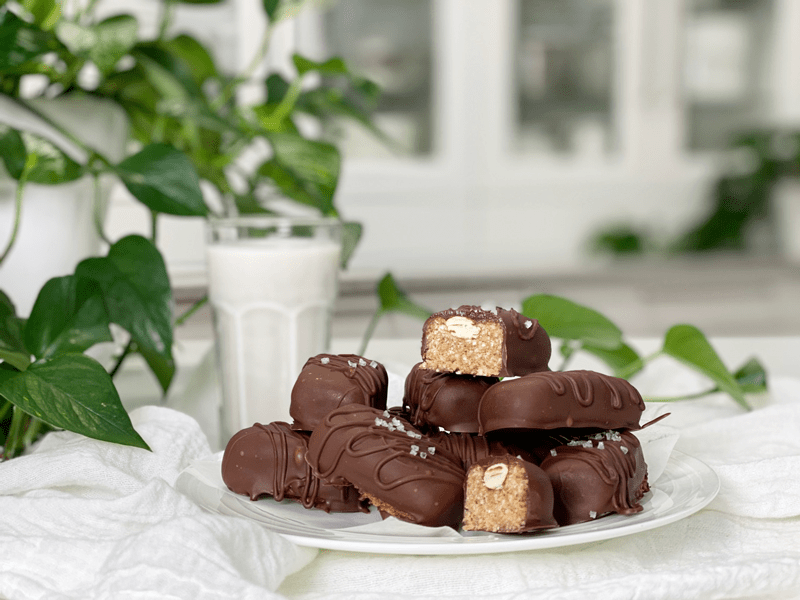

Almond Joyous Bars
Almond Joyous Bars
Almond Joyous bars are one of my favorites… OK, so I say that a lot. I can’t help it. I love them all! If I didn’t like them, I wouldn’t be posting them. But seriously, I grew up loving Almond Joy candy bars, and these taste just like them.

The mouth-watering chocolate, sweet coconut, and crisp whole almonds—all packed into one INDESCRIBABLY DELICIOUS bar. And to think, it took Hersey’s all of the following ingredients to create the Almond Joy: corn syrup, milk chocolate (sugar, cocoa butter, chocolate), milk, lactose, milk-fat, nonfat milk, soy lecithin, PGPR, coconut, sugar, almond roasted in sunflower oil, palm kernel & oil, cocoa, milk, salt, hydrolyzed milk protein, AND sodium metabisulfite. And all it took me was; dates, coconut oil, coconut, almonds, and chocolate. I think they hired the wrong recipe developer.
When creating the bars, I only used one tablespoon worth of filling. You will be tempted to make them larger… restain yourself sister (brother!) These bars are very rich and the size I made them were perfect. I hope you enjoy this DELICIOUS yet straightforward recipe. Blessings, amie sue P.S. I first shared this recipe on 12/02/10, but since I made them for some gifts today, I thought I would update the photos and bump it to the top of the list… so sad how many of the old recipes get lost in the shuffle and forgotten about. Hehe Poor, poor recipes. :)
 Ingredients:
Ingredients:
Yields roughly 12 bars
- 3/4 cup (208 g) date paste
- 1/4 cup (40 g) cold-pressed coconut oil, warmed
- 1 1/2 cups (107 g) dried shredded coconut
- 36 raw almonds, soaked & dehydrated (for topping)
Coating
Preparation:
- In the food processor outfitted with the “S” blade, process the date paste, coconut oil, and shredded coconut till it reaches a paste-like texture.
- If the coconut flakes are large, grind them down in the food processor before adding anything else.
- With a 1 Tbsp cookie scoop, remove the dough, roll into a bar, then hand shape into a bar. Press 2 almonds on the top.
- Prepare the chocolate and dip each piece until it is fully coated.
- If you decide on using store-bought vegan chocolate chips, place them in a stainless or glass bowl and slide it into the dehydrator to melt. Stir occasionally while it is melting.
- Place on parchment paper while it firms up.
- Store in an airtight container in the fridge for up to one month or longer in the freezer.
© AmieSue.com